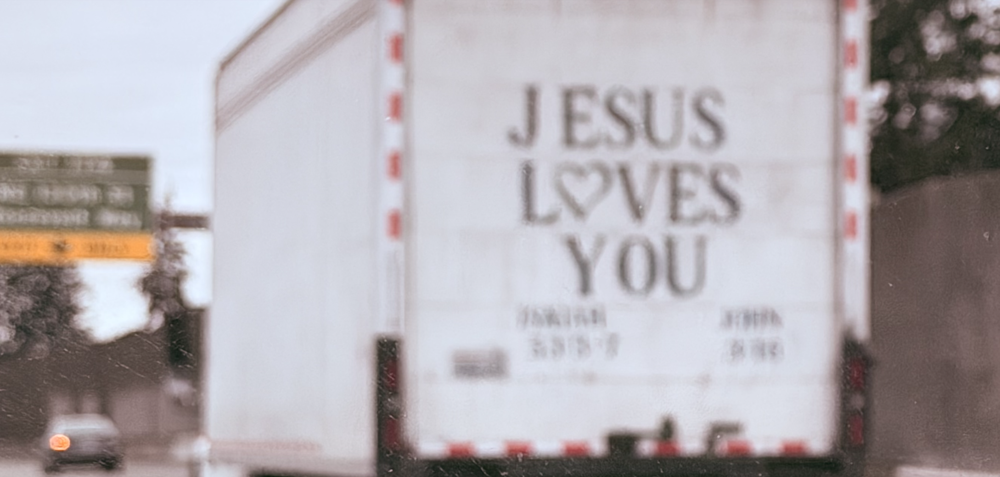

快速链接
第一次，我深刻地想 -- 人于浩瀚宇宙中，无非尘埃一粒 -- 是在某次某博里某位体育明星的关于自己情感经历的自述里。我一直赞同类似观点。当然更多赞同的人，也会身体力行，两眼不忘窗外事，闷声把大财发上，也是坠好的。我也读到过，有人描述，年轻人喜欢在互联网发声，更像是没有权利者对于权力的渴望。总希望，巧妙地，在自己拥有的社交圈里制造声音，获得满足。我也接纳这些分析。当然高尚是墓志铭，卑鄙是通行证。我也认同。
想来想去，悄无声息地，毫无期待地，写点日记，可能是我最想要的抒发方式。我以这种，薄弱的，缓缓的，独自的，沟通方式，来保存我的声音。
主持人朗读的新闻头条的时候，平和有力，字正腔圆，让人一听就会。民间纪录片里的声音，平淡嘈杂，毫不协调。在宏大叙述下，背景里的声音都被过滤，叙事变得整齐划一。之前油管里的纪录片有三，《县长》，《三和大神》，《横店群演》，我总如数家珍。最近，推荐系统用了熟悉的套路，主页面里《开盘》跃然纸上。兴奋地点看后沉重地看完。2021年左右的时空，在影像里硬深深被折叠起来。一个多小时里，总有时候会看到出神，像我能营造出属于自己的一个上帝视角，看到每个褶皱里生活的人，在自己的褶皱里，活着。
土地财政，房地产，中国经济，类的学术名词，就算人在海外，国内的房子涨涨跌跌，我们这代人总耳濡目染；或多或少，也与切身利益相关。《开盘》的叙述者，是一群在房地产崩坍前的房产销售。故事的主线清晰：地产狂热期，销售们的摩拳擦掌，购房者的热情高涨；到地产消退期的，强弩之末，和人心惶惶；再到崩塌前的草木皆兵。主线更像是教育和科普，让人不要追随狂热，大厦倾塌时碾压过的个人意志。我不喜欢。这些也都在新闻头条里。
那天晚上，一队人在总结开盘当天业绩没有达标。有业绩好的人，分享自己的经验，总结的客户行为习惯，让大家重新振作；小队领导在抱怨运气的同时，也会自责懈怠，也会夹带私货，说出自己的难处。每个人都带着镣铐，带着面具。也都带着疲惫和沮丧，也都带着迫切的希望。我感受到的，并不是他们有多努力的活着；而只是，他们都在活着 -- 真实地存在着，在当时活着。更重要的是，他们都带着自己的视角，在有意义地，有目的地，有思想地，活着。他们没有感受到的，也无需感受到的，是属于房地产时代的洪流，宏大叙述里的那些点线走向。

纪录片里，销售与自己孩子视频说过年开大奔回家。让我动容的，并不是他在视频时，和他当下生活困境里的反差。而是，这些都是他们真实地活着的铁证。车水马龙时，他们开酒庆祝，畅想未来，是活着；无人问津时，他们闷闷不乐，苦思冥想，也是活着。他们也会仰望星空，分析世界经济；他们更会揣摩人心，精心设计。他们会夹带私货，也会享受不劳而获。时代背景墙里，一个个活着的自己，就是一个个存在的意义。
从小语文课本里说的就是，山的那头还是山。我的宏大叙述外，也还有别的故事。我的故事里，也有别人的宏大叙述。在自己的褶皱里吧。九曲十八弯，乐趣无穷。